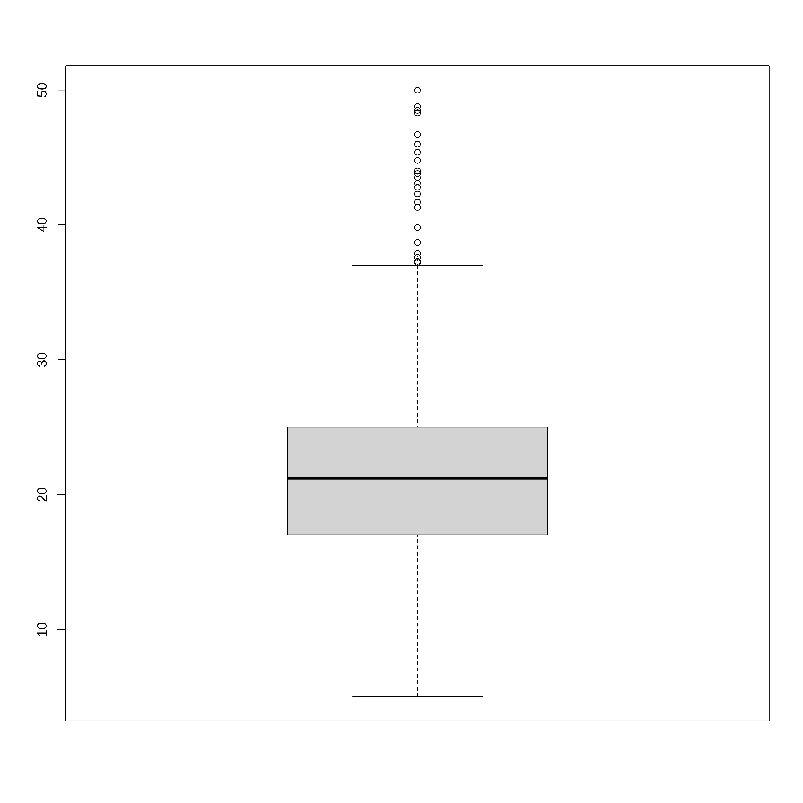
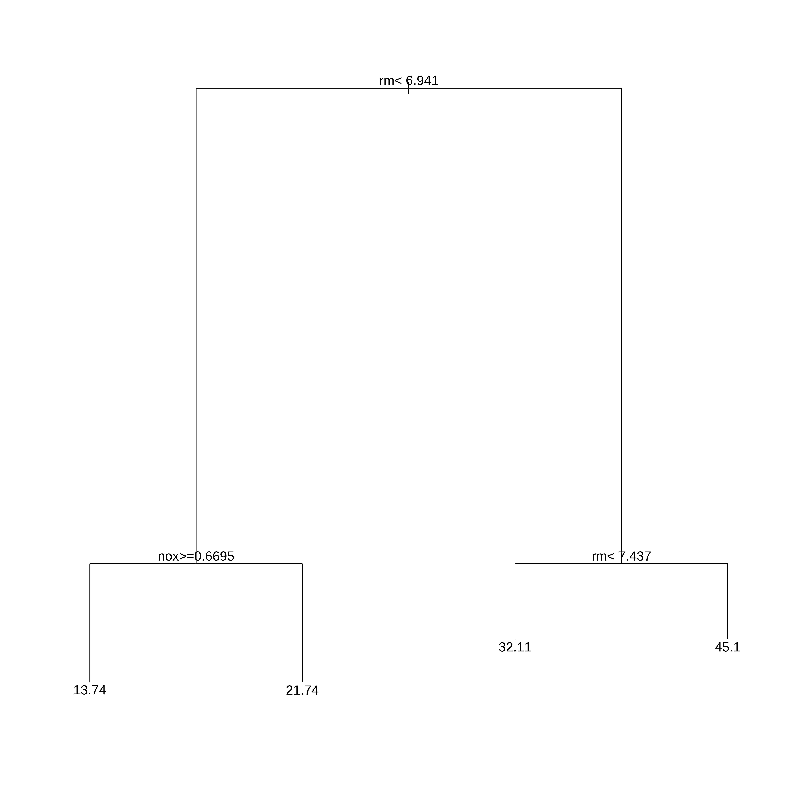
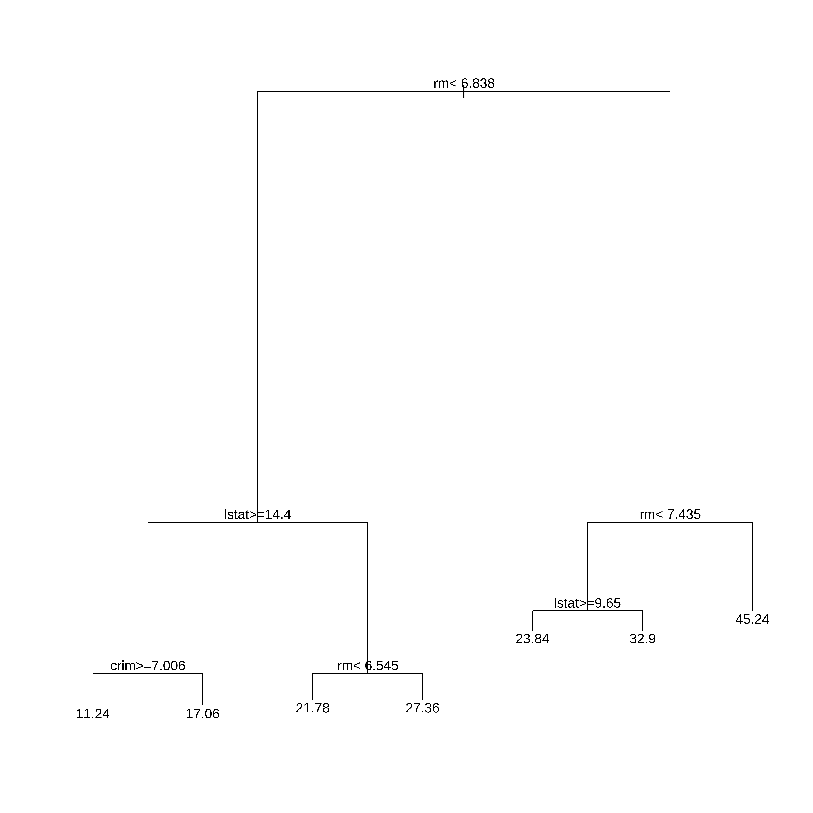
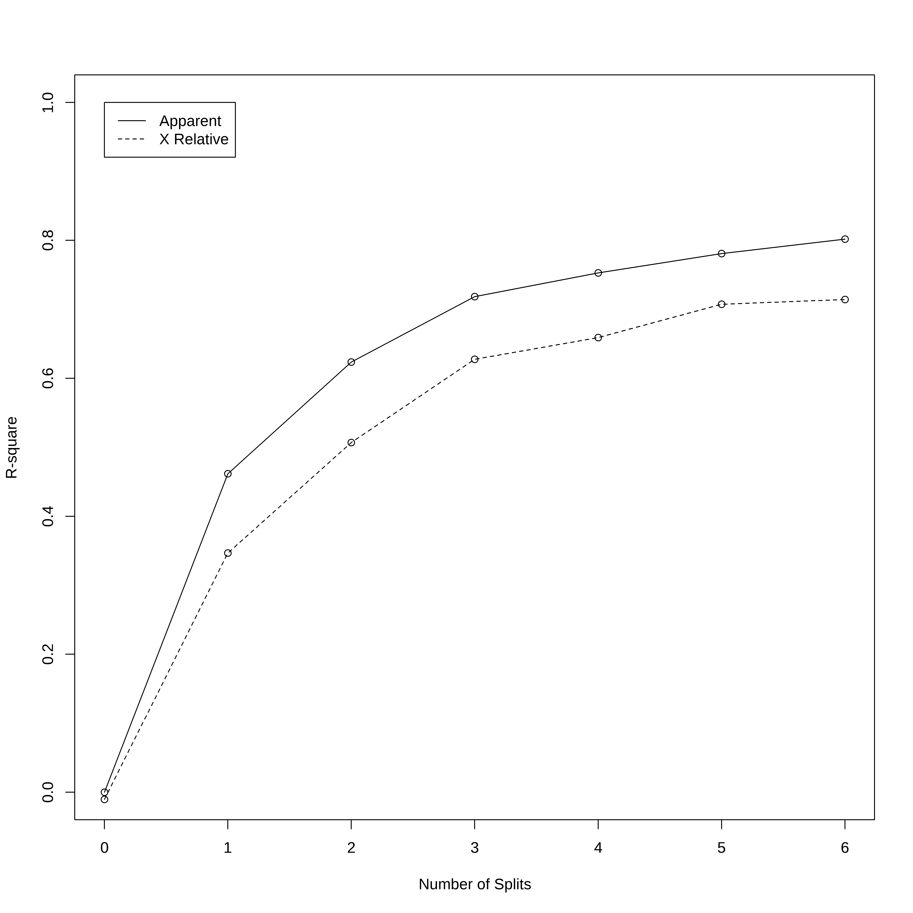
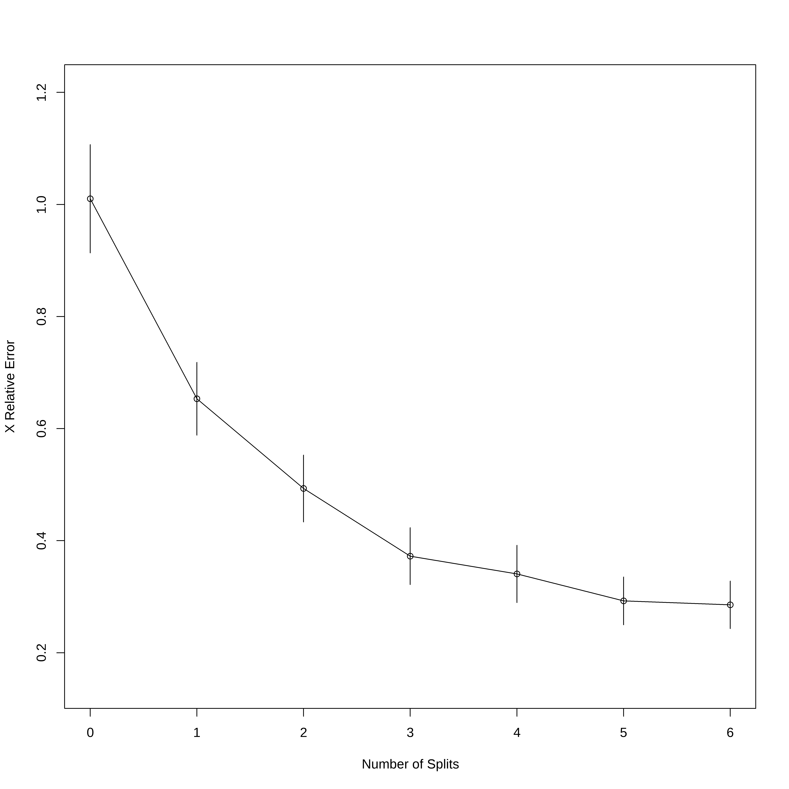
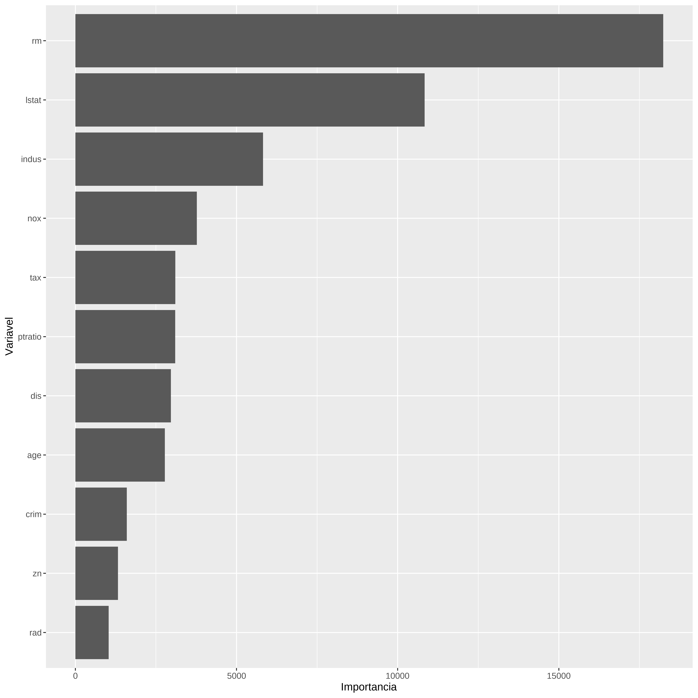
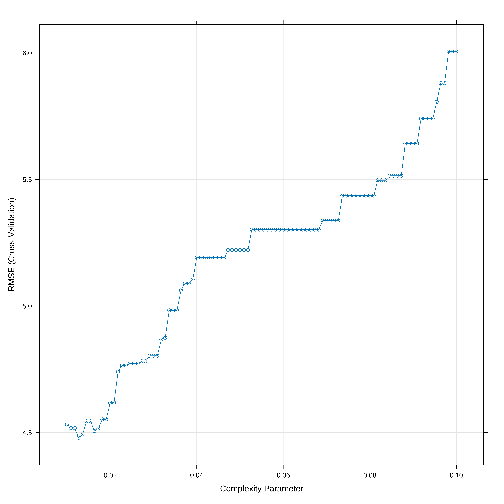
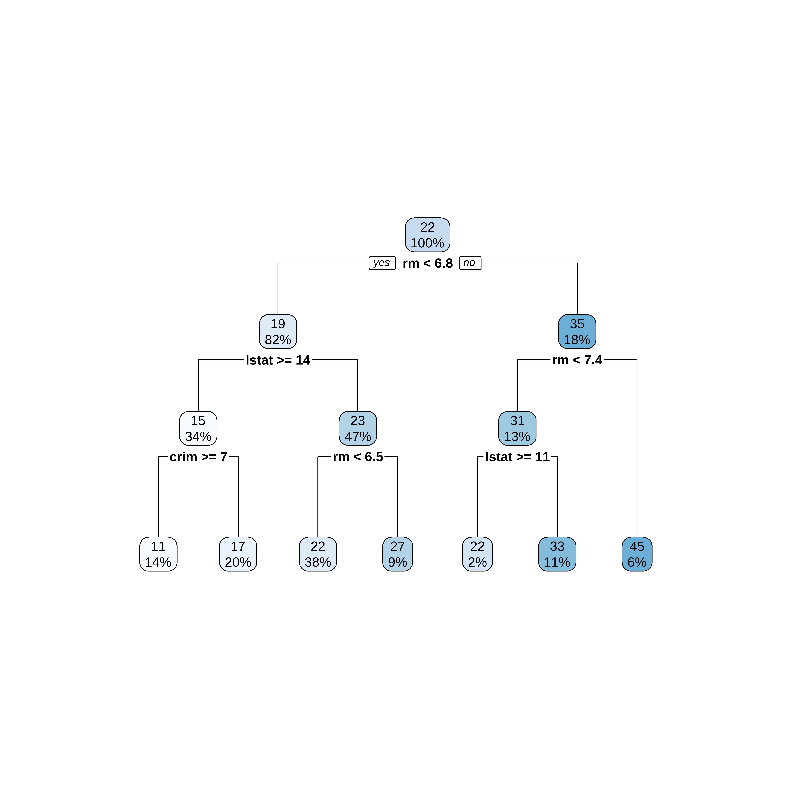
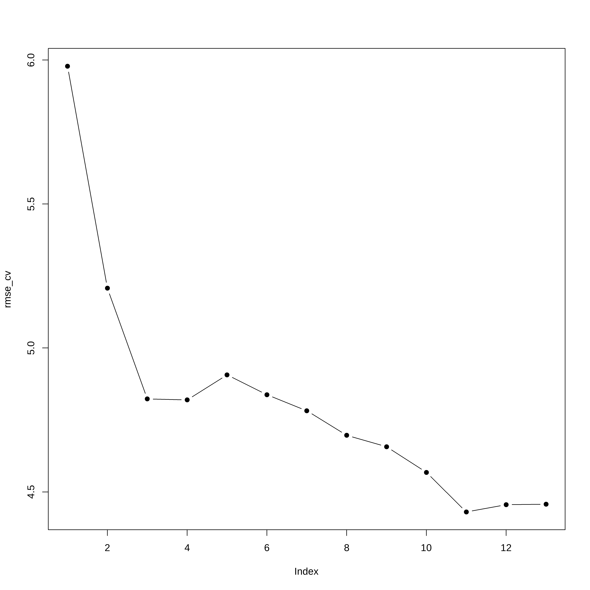

library(MASS)
library(tidyverse)
library(psych)Arvores de Regressão
Bibliotecas
Avaliando, selecionando dados
data("Boston")
names(Boston) [1] "crim" "zn" "indus" "chas" "nox" "rm" "age"
[8] "dis" "rad" "tax" "ptratio" "black" "lstat" "medv" describe(Boston) vars n mean sd median trimmed mad min max range skew
crim 1 506 3.61 8.60 0.26 1.68 0.33 0.01 88.98 88.97 5.19
zn 2 506 11.36 23.32 0.00 5.08 0.00 0.00 100.00 100.00 2.21
indus 3 506 11.14 6.86 9.69 10.93 9.37 0.46 27.74 27.28 0.29
chas 4 506 0.07 0.25 0.00 0.00 0.00 0.00 1.00 1.00 3.39
nox 5 506 0.55 0.12 0.54 0.55 0.13 0.38 0.87 0.49 0.72
rm 6 506 6.28 0.70 6.21 6.25 0.51 3.56 8.78 5.22 0.40
age 7 506 68.57 28.15 77.50 71.20 28.98 2.90 100.00 97.10 -0.60
dis 8 506 3.80 2.11 3.21 3.54 1.91 1.13 12.13 11.00 1.01
rad 9 506 9.55 8.71 5.00 8.73 2.97 1.00 24.00 23.00 1.00
tax 10 506 408.24 168.54 330.00 400.04 108.23 187.00 711.00 524.00 0.67
ptratio 11 506 18.46 2.16 19.05 18.66 1.70 12.60 22.00 9.40 -0.80
black 12 506 356.67 91.29 391.44 383.17 8.09 0.32 396.90 396.58 -2.87
lstat 13 506 12.65 7.14 11.36 11.90 7.11 1.73 37.97 36.24 0.90
medv 14 506 22.53 9.20 21.20 21.56 5.93 5.00 50.00 45.00 1.10
kurtosis se
crim 36.60 0.38
zn 3.95 1.04
indus -1.24 0.30
chas 9.48 0.01
nox -0.09 0.01
rm 1.84 0.03
age -0.98 1.25
dis 0.46 0.09
rad -0.88 0.39
tax -1.15 7.49
ptratio -0.30 0.10
black 7.10 4.06
lstat 0.46 0.32
medv 1.45 0.41dados <- Boston
extrato <- dados %>% select(medv, nox, rm)
summary(extrato) medv nox rm
Min. : 5.00 Min. :0.3850 Min. :3.561
1st Qu.:17.02 1st Qu.:0.4490 1st Qu.:5.886
Median :21.20 Median :0.5380 Median :6.208
Mean :22.53 Mean :0.5547 Mean :6.285
3rd Qu.:25.00 3rd Qu.:0.6240 3rd Qu.:6.623
Max. :50.00 Max. :0.8710 Max. :8.780 boxplot(extrato$medv)
Visualizando os dados
## Distribuição de dados na maior parte simétrica com valores na cauda direta
## maior do que o esperado para uam distribuição simétrica
ggplot(extrato, aes(x=medv)) +
geom_histogram(bins = round(1+3.322*log10(nrow(extrato)),0))## Grafico de dispersão nox vs rm
ggplot(extrato, aes(x=rm, y=nox)) +
geom_point()Arvore de Regressão
Na biblioteca rpart as arvores de regressão são obtidas usando o método anova. Existem alguns controles que podem ser feitos nos parametros da arvore.
Neste exemplo só definimos o menor conjunto de dados numa partição (minsplit) e o parametro de complexidade cp. Qualquer partição/divisão que não melhore o ajuste por um fator de cp não é tentada. Por exemplo, com a partição pela anova, isso significa que o R-quadrado geral deve aumentar pelo valor de cp a cada etapa. O principal papel deste parâmetro é economizar tempo de computação podando divisões que obviamente não valem a pena. Essencialmente, o usuário informa ao programa que qualquer divisão que não melhore o ajuste pelo cp, provavelmente será podada por validação cruzada, e que, portanto, não é necessário persegui-lo.
##Usando rpart para desenvolver a arvore
library(rpart)
arvreg <- rpart(medv ~ .,
data=extrato,
method="anova", #para arvore de regressão
control=rpart.control(minsplit=30,cp=0.06))
plot(arvreg)
text(arvreg,pretty=0)
arvregn= 506
node), split, n, deviance, yval
* denotes terminal node
1) root 506 42716.300 22.53281
2) rm< 6.941 430 17317.320 19.93372
4) nox>=0.6695 97 2214.391 13.73918 *
5) nox< 0.6695 333 10296.590 21.73814 *
3) rm>=6.941 76 6059.419 37.23816
6) rm< 7.437 46 1899.612 32.11304 *
7) rm>=7.437 30 1098.850 45.09667 *Segmentos
A partir da árvore obtida no item anterior podemos fazer uma representação gráfica das partições obtidas.
ggplot(extrato, aes(x=rm, y=nox)) +
geom_point() +
geom_segment(aes(x = 0, y = 0.6695, xend = 6.941, yend = 0.6695),
linetype="dashed", color="red", size=1) +
geom_vline(xintercept = 6.941, linetype="dashed", color="red", size=1) +
geom_vline(xintercept = 7.437, linetype="dashed", color="red", size=1) Warning: Using `size` aesthetic for lines was deprecated in ggplot2 3.4.0.
ℹ Please use `linewidth` instead. # scale_y_continuous(limits = c(0.3, 1)) +Treino e Teste com todas as variáveis
Agora vamos trabalhar com o conjunto completo criando um conjunto de treino e teste.
## Vamos criar os conjuntos de treino teste e desenvolver a arvore
## com todas as variáveis.
library(caret)Carregando pacotes exigidos: lattice
Attaching package: 'caret'The following object is masked from 'package:purrr':
liftset.seed(21)
indice <- createDataPartition(dados$medv, times=1, p=0.75, list=FALSE)
conj_treino <- dados[indice,]
conj_teste <- dados[-indice,]
head(conj_treino) crim zn indus chas nox rm age dis rad tax ptratio black lstat
1 0.00632 18.0 2.31 0 0.538 6.575 65.2 4.0900 1 296 15.3 396.90 4.98
3 0.02729 0.0 7.07 0 0.469 7.185 61.1 4.9671 2 242 17.8 392.83 4.03
4 0.03237 0.0 2.18 0 0.458 6.998 45.8 6.0622 3 222 18.7 394.63 2.94
5 0.06905 0.0 2.18 0 0.458 7.147 54.2 6.0622 3 222 18.7 396.90 5.33
6 0.02985 0.0 2.18 0 0.458 6.430 58.7 6.0622 3 222 18.7 394.12 5.21
7 0.08829 12.5 7.87 0 0.524 6.012 66.6 5.5605 5 311 15.2 395.60 12.43
medv
1 24.0
3 34.7
4 33.4
5 36.2
6 28.7
7 22.9head(conj_teste) crim zn indus chas nox rm age dis rad tax ptratio black lstat
2 0.02731 0.0 7.07 0 0.469 6.421 78.9 4.9671 2 242 17.8 396.90 9.14
10 0.17004 12.5 7.87 0 0.524 6.004 85.9 6.5921 5 311 15.2 386.71 17.10
12 0.11747 12.5 7.87 0 0.524 6.009 82.9 6.2267 5 311 15.2 396.90 13.27
16 0.62739 0.0 8.14 0 0.538 5.834 56.5 4.4986 4 307 21.0 395.62 8.47
19 0.80271 0.0 8.14 0 0.538 5.456 36.6 3.7965 4 307 21.0 288.99 11.69
23 1.23247 0.0 8.14 0 0.538 6.142 91.7 3.9769 4 307 21.0 396.90 18.72
medv
2 21.6
10 18.9
12 18.9
16 19.9
19 20.2
23 15.2Arvore de Regressão Treino
## A função rpart tem diversos parametros aqui foi configurado um deles
# cp o parametro de complexidade
# Um valor de cp muito pequeno ocasiona overfitting e um valor muito grande
# resulta numa arvore muito pequena (underfitting).
# Nos dois casos se diminui o desempenho do modelo.
arvreg1 <- rpart(medv ~ .,
data=conj_treino,
method="anova", #para arvore de regressão
control=rpart.control(minsplit=30,cp=0.01))
plot(arvreg1)
text(arvreg1,pretty=0)
arvreg1n= 381
node), split, n, deviance, yval
* denotes terminal node
1) root 381 31196.9300 22.34672
2) rm< 6.8375 311 10862.7700 19.42958
4) lstat>=14.405 131 2579.9460 14.70534
8) crim>=7.006285 53 523.4645 11.23774 *
9) crim< 7.006285 78 986.1646 17.06154 *
5) lstat< 14.405 180 3231.2930 22.86778
10) rm< 6.5445 145 1867.9540 21.78414 *
11) rm>=6.5445 35 487.6657 27.35714 *
3) rm>=6.8375 70 5929.5660 35.30714
6) rm< 7.435 49 2010.0620 31.05102
12) lstat>=9.65 10 467.4640 23.84000 *
13) lstat< 9.65 39 889.2800 32.90000 *
7) rm>=7.435 21 960.7895 45.23810 *Erros a partir do conjunto de treino
- O erro relativo (Rel error) é obtido através de 1 - R2
- O xerror é obtido através da validação cruzadada (10 fold)
- O xtsd é o desvio padrão dos valores obtidos na validação cruzada.
## Mostra 2 gráficos:
# 1) Variação do R2 aparente e relativo vs número de partições
# 2) Erro Relativo vs número de partições
rsq.rpart(arvreg1)
Regression tree:
rpart(formula = medv ~ ., data = conj_treino, method = "anova",
control = rpart.control(minsplit = 30, cp = 0.01))
Variables actually used in tree construction:
[1] crim lstat rm
Root node error: 31197/381 = 81.882
n= 381
CP nsplit rel error xerror xstd
1 0.461731 0 1.00000 1.01028 0.096645
2 0.161924 1 0.53827 0.65330 0.065046
3 0.094840 2 0.37634 0.49315 0.059728
4 0.034308 3 0.28151 0.37245 0.050769
5 0.028069 4 0.24720 0.34074 0.051145
6 0.020942 5 0.21913 0.29254 0.042692
7 0.010000 6 0.19819 0.28562 0.042529

## Mostra a variação do Erro relativo vs cp(parametro de complexidade)
plotcp(arvreg1)
Gráfico de importancia das variáveis
A importancia das variáveis é calculada com base nos resultados das melhores partições
# Gráfico de Importância de variável
var_imp <- arvreg1$variable.importance
nomes_var <- names(var_imp)
var_impdf <- data.frame(Importancia=unname(var_imp), Variavel=nomes_var) %>%
arrange(Importancia)
var_impdf$Variavel <- factor(var_impdf$Variavel, levels=var_impdf$Variavel)
ggplot(var_impdf, aes(x=Variavel, y=Importancia)) +
geom_col() +
coord_flip()
Mostrando a árvore e gerando previsões
# Mostrando a arvore
par(xpd = NA)
plot(arvreg1)
text(arvreg1,pretty=0)
# Fazendo Previsões
previsao1 <- arvreg1 %>% predict(conj_teste)
head(previsao1) 2 10 12 16 19 23
21.78414 17.06154 21.78414 21.78414 21.78414 17.06154 # Calcula os erros de previsão
RMSE(previsao1, conj_teste$medv)[1] 5.303593Arvore de Regressão com caret
Aqui vamos usar a biblioteca caret que tem umas facilidades para otimização do cp e apresentação dos resultados
set.seed(21)
## Otimizamos o valor de cp usando um 10-fold cv
# O parametro tuneLength diz para o algoritmo escolher diferentes valores para cp
# O parametro tuneGrid permite decidir que valores cp deve assumir enquanto que o
# tuneLength somente limita o número default de parametros que se usa.
arvreg2 <- train(medv ~ . , data = conj_treino, method = "rpart",
trControl = trainControl("cv", number = 10),
tuneGrid = data.frame(cp = seq(0.01,0.10, length.out=100))
)
# Mostra a acurácia vs cp (parametro de complexidade)
plot(arvreg2)
## Indica o melhor valor de cp
arvreg2$bestTune cp
4 0.01272727Desenhando a Árvore
## Apresenta o modelo final de arvore ajustado
par(xpd = NA)
plot(arvreg2$finalModel)
text(arvreg2$finalModel, digits = 3)## usando o rpart.plot
library(rpart.plot)
rpart.plot(arvreg2$finalModel)
Previsões
# Regras de Decisão
arvreg2$finalModeln= 381
node), split, n, deviance, yval
* denotes terminal node
1) root 381 31196.9300 22.34672
2) rm< 6.8375 311 10862.7700 19.42958
4) lstat>=14.405 131 2579.9460 14.70534
8) crim>=7.006285 53 523.4645 11.23774 *
9) crim< 7.006285 78 986.1646 17.06154 *
5) lstat< 14.405 180 3231.2930 22.86778
10) rm< 6.5445 145 1867.9540 21.78414 *
11) rm>=6.5445 35 487.6657 27.35714 *
3) rm>=6.8375 70 5929.5660 35.30714
6) rm< 7.435 49 2010.0620 31.05102
12) lstat>=11.315 7 367.8886 21.88571 *
13) lstat< 11.315 42 956.1507 32.57857 *
7) rm>=7.435 21 960.7895 45.23810 *# Fazendo Previsões
previsao2 <- arvreg2 %>% predict(conj_teste)
head(previsao2) 2 10 12 16 19 23
21.78414 17.06154 21.78414 21.78414 21.78414 17.06154 # Calcula os erros de previsão
RMSE(previsao2, conj_teste$medv)[1] 5.304604Vamos comparar com Regressão Multipla
library(leaps)
## Cria uma função de predição para o leaps
predict.regsubsets <- function(object,newdata,id,...){
form <- as.formula(object$call[[2]])
mat <- model.matrix(form,newdata)
coefi <- coef(object,id=id)
mat[,names(coefi)]%*%coefi
}
set.seed(21)
envelopes <- sample(rep(1:5,length=nrow(conj_treino)))
table(envelopes)envelopes
1 2 3 4 5
77 76 76 76 76 erro_cv <- matrix(NA,5,13)
for(k in 1:5){
melh_ajus <- regsubsets(medv ~ ., data=conj_treino[envelopes!=k,],
nvmax=13,method="forward")
for(i in 1:13){
prev <- predict(melh_ajus, conj_treino[envelopes==k,],id=i)
erro_cv[k,i] <- mean( (conj_treino$medv[envelopes==k]-prev)^2)
}
}
rmse_cv <- sqrt(apply(erro_cv,2,mean)) # Erro medio quadratico de cada modelo
plot(rmse_cv,pch=19,type="b") 
Obtem a fórmula do modelo
coef(melh_ajus, 11) (Intercept) crim zn chas nox
37.051974686 -0.144753575 0.047778839 1.780110617 -14.931943579
rm dis rad tax ptratio
3.815637016 -1.500993904 0.349882023 -0.015845438 -0.986230946
black lstat
0.009024705 -0.534163142 Teste com o conjunto de teste
previsao3 <- predict(melh_ajus, conj_teste, 11)
RMSE(previsao3, conj_teste$medv)[1] 5.936577